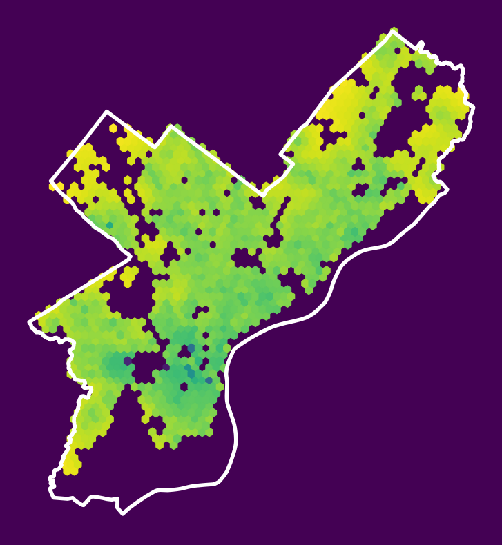
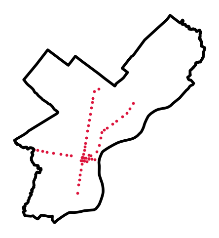
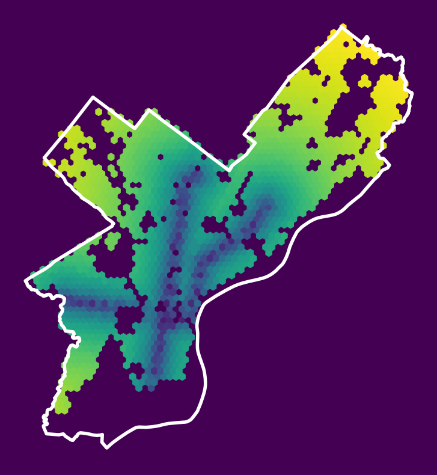
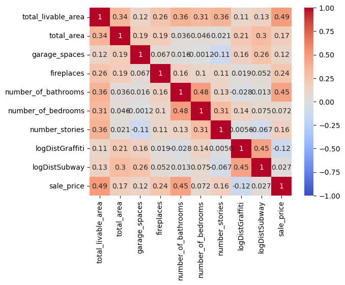
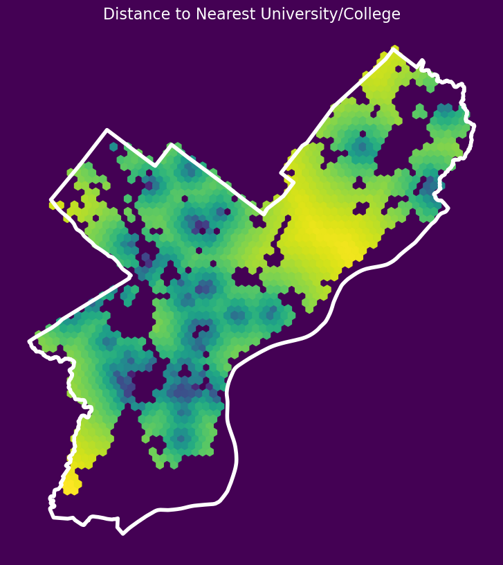
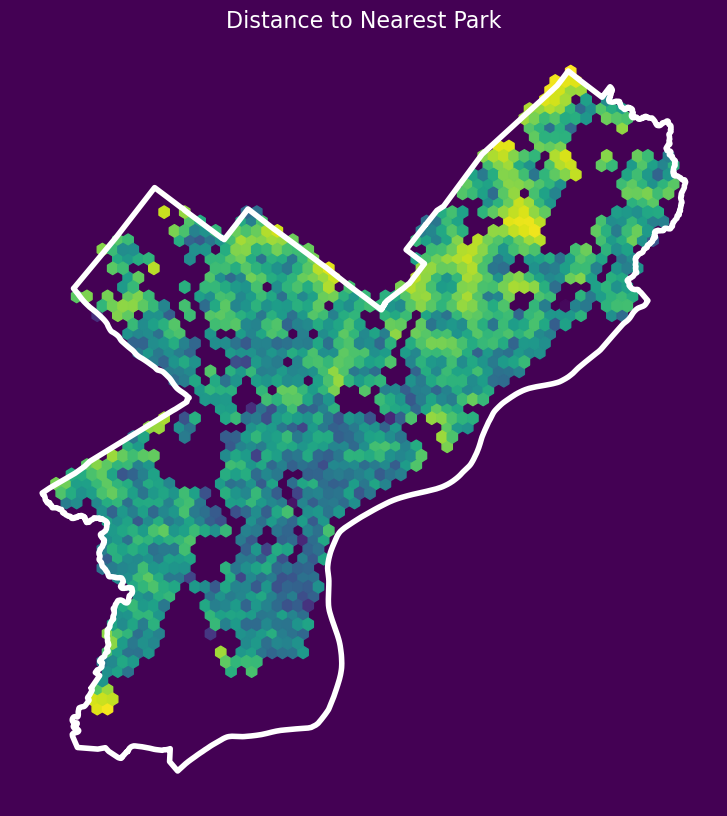
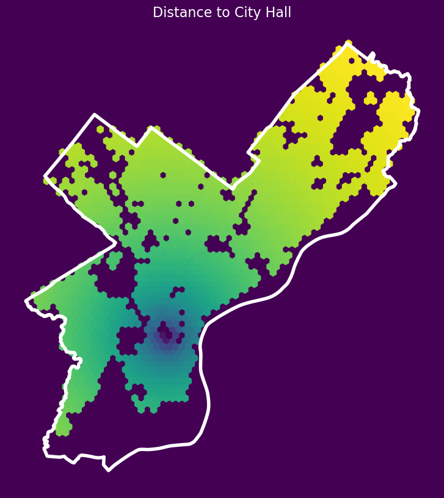
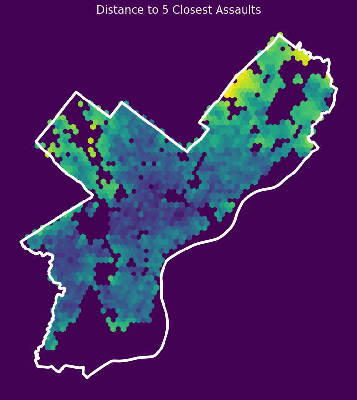
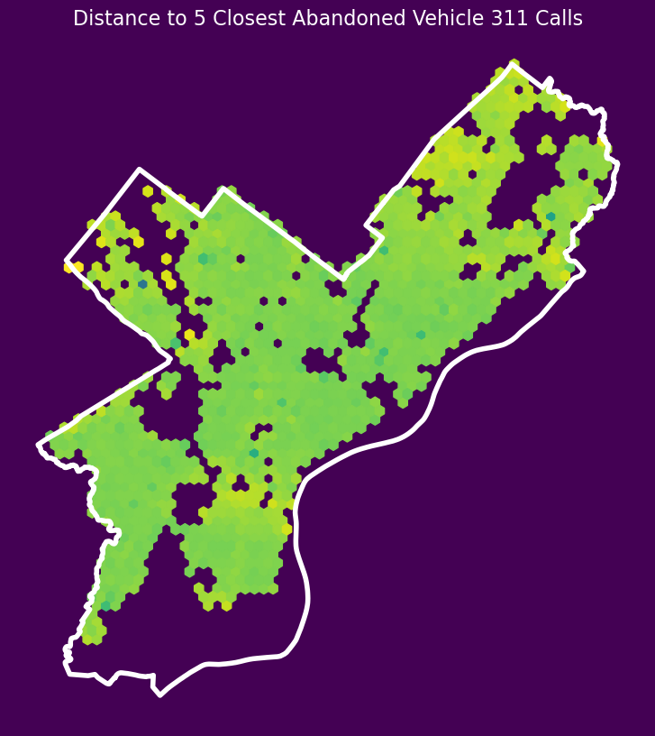

Show Code
from matplotlib import pyplot as plt
import numpy as np
import pandas as pd
import geopandas as gpd
import requests
import hvplot.pandas
np.random.seed(42)from matplotlib import pyplot as plt
import numpy as np
import pandas as pd
import geopandas as gpd
import requests
import hvplot.pandas
np.random.seed(42)pd.options.display.max_columns = 999Focus: much more hands-on experience with featuring engineering and adding spatial based features
Today: modeling housing prices in Philadelphia
First, let’s setup all of the imports we’ll need from scikit learn:
# Models
from sklearn.linear_model import LinearRegression
from sklearn.ensemble import RandomForestRegressor
# Model selection
from sklearn.model_selection import train_test_split, cross_val_score, GridSearchCV
# Pipelines
from sklearn.pipeline import make_pipeline
# Preprocessing
from sklearn.preprocessing import StandardScaler, PolynomialFeaturesLet’s download data for single-family properties in Philadelphia that had their last sale during 2022.
Sources: - OpenDataPhilly - Metadata
Download the raw sales data:
# the CARTO API url
carto_url = "https://phl.carto.com/api/v2/sql"
# Only pull 2022 sales for single family residential properties
where = "sale_date >= '2022-01-01' and sale_date <= '2022-12-31'"
where = where + " and category_code_description IN ('SINGLE FAMILY', 'Single Family')"
# Create the query
query = f"SELECT * FROM opa_properties_public WHERE {where}"
# Make the request
params = {"q": query, "format": "geojson"}
response = requests.get(carto_url, params=params)Convert to a GeoDataFrame:
# Make the GeoDataFrame
salesRaw = gpd.GeoDataFrame.from_features(response.json(), crs="EPSG:4326")
# Optional: put it a reproducible order for test/training splits later
salesRaw = salesRaw.sort_values("parcel_number")salesRaw.head()| geometry | cartodb_id | assessment_date | basements | beginning_point | book_and_page | building_code | building_code_description | category_code | category_code_description | ... | utility | view_type | year_built | year_built_estimate | zip_code | zoning | pin | building_code_new | building_code_description_new | objectid | |
|---|---|---|---|---|---|---|---|---|---|---|---|---|---|---|---|---|---|---|---|---|---|
| 1312 | POINT (-75.14926 39.92699) | 61347 | 2024-09-12T00:00:00Z | A | N W C MORRIS | 54134182 | BB0 | STR/OFF 2 STY MASONRY | 1 | SINGLE FAMILY | ... | None | I | 2024 | None | 19148 | CMX1 | 1001684829 | 25 | ROW MODERN | 710787987 |
| 1310 | POINT (-75.14928 39.92693) | 61345 | 2024-09-12T00:00:00Z | A | N W C MORRIS | 54134182 | BB0 | STR/OFF 2 STY MASONRY | 1 | SINGLE FAMILY | ... | None | I | 2024 | None | 19148 | CMX1 | 1001684830 | 25 | ROW MODERN | 710787985 |
| 1278 | POINT (-75.1493 39.92687) | 61302 | 2024-09-12T00:00:00Z | A | N W C MORRIS | 54134182 | BB0 | STR/OFF 2 STY MASONRY | 1 | SINGLE FAMILY | ... | None | I | 2024 | None | 19148 | CMX1 | 1001684831 | 25 | ROW MODERN | 710787984 |
| 1311 | POINT (-75.14932 39.92682) | 61346 | 2024-09-12T00:00:00Z | A | N W C MORRIS | 54134182 | BB0 | STR/OFF 2 STY MASONRY | 1 | SINGLE FAMILY | ... | None | I | 2024 | None | 19148 | CMX1 | 1001684832 | 25 | ROW MODERN | 710787986 |
| 817 | POINT (-75.1486 39.93145) | 60692 | 2024-05-30T00:00:00Z | 0 | 36'6" E OF AMERICAN | 54131081 | R30 | ROW B/GAR 2 STY MASONRY | 1 | SINGLE FAMILY | ... | None | I | 1960 | Y | 19147 | RSA5 | 1001563093 | 23 | ROW POST WAR | 710788698 |
5 rows × 80 columns
len(salesRaw)25289Get the feature sales data we will work with:
# The feature columns we want to use
cols = [
"sale_price",
"total_livable_area",
"total_area",
"garage_spaces",
"fireplaces",
"number_of_bathrooms",
"number_of_bedrooms",
"number_stories",
"exterior_condition",
"zip_code",
]
# Trim to these columns and remove NaNs
sales = salesRaw[cols + ["geometry"]].dropna()
# Trim zip code to only the first five digits
sales["zip_code"] = sales["zip_code"].astype(str).str.slice(0, 5)# Trim very low and very high sales
valid = (sales['sale_price'] > 3000) & (sales['sale_price'] < 1e6)
sales = sales.loc[valid]len(sales)17389Split the data into a training and test set:
# Split the data 70/30
train_set, test_set = train_test_split(sales, test_size=0.3, random_state=42)Get the predictive variable: log of sale price:
# the target labels: log of sale price
y_train = np.log(train_set["sale_price"])
y_test = np.log(test_set["sale_price"])Get the features (numerical only first):
# The features
feature_cols = [
"total_livable_area",
"total_area",
"garage_spaces",
"fireplaces",
"number_of_bathrooms",
"number_of_bedrooms",
"number_stories",
]
X_train = train_set[feature_cols].values
X_test = test_set[feature_cols].valuesRun a linear regression model as a baseline:
# Make a linear model pipeline
linear_pipeline = make_pipeline(StandardScaler(), LinearRegression())
# Fit on the training data
linear_pipeline.fit(X_train, y_train)
# What's the test score?
linear_pipeline.score(X_test, y_test)0.2650097684183792Run cross-validation on a random forest model:
# Make a random forest pipeline
forest_pipeline = make_pipeline(
StandardScaler(), RandomForestRegressor(n_estimators=100, random_state=42)
)
# Run the 10-fold cross validation
scores = cross_val_score(
forest_pipeline,
X_train,
y_train,
cv=10,
)
# Report
print("R^2 scores = ", scores)
print("Scores mean = ", scores.mean())
print("Score std dev = ", scores.std())R^2 scores = [0.34041758 0.35191774 0.332641 0.33121 0.35314371 0.34806864
0.37926166 0.36764311 0.37106929 0.27176526]
Scores mean = 0.344713798145329
Score std dev = 0.028663892577243603# Fit on the training data
forest_pipeline.fit(X_train, y_train)
# What's the test score?
forest_pipeline.score(X_test, y_test)0.3363361158480216# Extract the regressor from the pipeline
forest_model = forest_pipeline["randomforestregressor"]# Create the data frame of importances
importance = pd.DataFrame(
{"Feature": feature_cols, "Importance": forest_model.feature_importances_}
).sort_values("Importance")
importance.hvplot.barh(x="Feature", y="Importance")We can use a technique called one-hot encoding
Steps: - Create a new column for each category - Represent each category as a vector of 1s and 0s

OneHotEncoder object is a preprocessor that will perform the vectorization stepColumnTransformer object will help us apply different transformers to numerical and categorical columnsfrom sklearn.compose import ColumnTransformer
from sklearn.preprocessing import OneHotEncoderLet’s try out the example data of colors:
# Example data of colors
colors = np.array(["red", "green", "blue", "red"])
colors = colors[:, np.newaxis]colors.shape(4, 1)colorsarray([['red'],
['green'],
['blue'],
['red']], dtype='<U5')# Initialize the OHE transformer
ohe = OneHotEncoder()
# Fit the transformer and then transform the colors
ohe.fit_transform(colors).toarray()array([[0., 0., 1.],
[0., 1., 0.],
[1., 0., 0.],
[0., 0., 1.]])# The corresponding category for each column
ohe.categories_[array(['blue', 'green', 'red'], dtype='<U5')]Let’s apply separate transformers for our numerical and categorical columns:
# Numerical columns
num_cols = [
"total_livable_area",
"total_area",
"garage_spaces",
"fireplaces",
"number_of_bathrooms",
"number_of_bedrooms",
"number_stories",
]
# Categorical columns
cat_cols = ["exterior_condition", "zip_code"]# Set up the column transformer with two transformers
# ----> Scale the numerical columns
# ----> One-hot encode the categorical columns
transformer = ColumnTransformer(
transformers=[
("num", StandardScaler(), num_cols),
("cat", OneHotEncoder(handle_unknown="ignore"), cat_cols),
]
)Note: the handle_unknown='ignore' parameter ensures that if categories show up in our training set, but not our test set, no error will be raised.
Initialize the pipeline object, using the column transformer and the random forest regressor
# Initialize the pipeline
# NOTE: only use 10 estimators here so it will run in a reasonable time
pipe = make_pipeline(
transformer, RandomForestRegressor(n_estimators=10,
random_state=42)
)Now, let’s fit the model.
train_set and test_setX_train and X_test numpy arrays.# Fit the training set
pipe.fit(train_set, y_train)Pipeline(steps=[('columntransformer',
ColumnTransformer(transformers=[('num', StandardScaler(),
['total_livable_area',
'total_area',
'garage_spaces',
'fireplaces',
'number_of_bathrooms',
'number_of_bedrooms',
'number_stories']),
('cat',
OneHotEncoder(handle_unknown='ignore'),
['exterior_condition',
'zip_code'])])),
('randomforestregressor',
RandomForestRegressor(n_estimators=10, random_state=42))])In a Jupyter environment, please rerun this cell to show the HTML representation or trust the notebook. | steps | [('columntransformer', ...), ('randomforestregressor', ...)] | |
| transform_input | None | |
| memory | None | |
| verbose | False |
| transformers | [('num', ...), ('cat', ...)] | |
| remainder | 'drop' | |
| sparse_threshold | 0.3 | |
| n_jobs | None | |
| transformer_weights | None | |
| verbose | False | |
| verbose_feature_names_out | True | |
| force_int_remainder_cols | 'deprecated' |
['total_livable_area', 'total_area', 'garage_spaces', 'fireplaces', 'number_of_bathrooms', 'number_of_bedrooms', 'number_stories']
| copy | True | |
| with_mean | True | |
| with_std | True |
['exterior_condition', 'zip_code']
| categories | 'auto' | |
| drop | None | |
| sparse_output | True | |
| dtype | <class 'numpy.float64'> | |
| handle_unknown | 'ignore' | |
| min_frequency | None | |
| max_categories | None | |
| feature_name_combiner | 'concat' |
| n_estimators | 10 | |
| criterion | 'squared_error' | |
| max_depth | None | |
| min_samples_split | 2 | |
| min_samples_leaf | 1 | |
| min_weight_fraction_leaf | 0.0 | |
| max_features | 1.0 | |
| max_leaf_nodes | None | |
| min_impurity_decrease | 0.0 | |
| bootstrap | True | |
| oob_score | False | |
| n_jobs | None | |
| random_state | 42 | |
| verbose | 0 | |
| warm_start | False | |
| ccp_alpha | 0.0 | |
| max_samples | None | |
| monotonic_cst | None |
# What's the test score?
pipe.score(test_set, y_test)0.5418529135729936R-squared of ~0.30 improved to R-squared of ~0.54!
Takeaway: neighborhood based effects play a crucial role in determining housing prices.
Side Note: to fully validate the model we should run k-fold cross validation and optimize hyperparameters of the model as well…
But first, we need to know the column names! The one-hot encoder created a column for each category type…
# The column transformer...
transformerColumnTransformer(transformers=[('num', StandardScaler(),
['total_livable_area', 'total_area',
'garage_spaces', 'fireplaces',
'number_of_bathrooms', 'number_of_bedrooms',
'number_stories']),
('cat', OneHotEncoder(handle_unknown='ignore'),
['exterior_condition', 'zip_code'])])In a Jupyter environment, please rerun this cell to show the HTML representation or trust the notebook. | transformers | [('num', ...), ('cat', ...)] | |
| remainder | 'drop' | |
| sparse_threshold | 0.3 | |
| n_jobs | None | |
| transformer_weights | None | |
| verbose | False | |
| verbose_feature_names_out | True | |
| force_int_remainder_cols | 'deprecated' |
['total_livable_area', 'total_area', 'garage_spaces', 'fireplaces', 'number_of_bathrooms', 'number_of_bedrooms', 'number_stories']
| copy | True | |
| with_mean | True | |
| with_std | True |
['exterior_condition', 'zip_code']
| categories | 'auto' | |
| drop | None | |
| sparse_output | True | |
| dtype | <class 'numpy.float64'> | |
| handle_unknown | 'ignore' | |
| min_frequency | None | |
| max_categories | None | |
| feature_name_combiner | 'concat' |
# The steps in the column transformer
transformer.named_transformers_{'num': StandardScaler(),
'cat': OneHotEncoder(handle_unknown='ignore'),
'remainder': 'drop'}# The one-hot step
ohe = transformer.named_transformers_['cat']
oheOneHotEncoder(handle_unknown='ignore')In a Jupyter environment, please rerun this cell to show the HTML representation or trust the notebook.
| categories | 'auto' | |
| drop | None | |
| sparse_output | True | |
| dtype | <class 'numpy.float64'> | |
| handle_unknown | 'ignore' | |
| min_frequency | None | |
| max_categories | None | |
| feature_name_combiner | 'concat' |
# One column for each category type!
ohe_cols = ohe.get_feature_names_out()
ohe_colsarray(['exterior_condition_1', 'exterior_condition_2',
'exterior_condition_3', 'exterior_condition_4',
'exterior_condition_5', 'exterior_condition_6',
'exterior_condition_7', 'zip_code_19102', 'zip_code_19103',
'zip_code_19104', 'zip_code_19106', 'zip_code_19107',
'zip_code_19111', 'zip_code_19114', 'zip_code_19115',
'zip_code_19116', 'zip_code_19118', 'zip_code_19119',
'zip_code_19120', 'zip_code_19121', 'zip_code_19122',
'zip_code_19123', 'zip_code_19124', 'zip_code_19125',
'zip_code_19126', 'zip_code_19127', 'zip_code_19128',
'zip_code_19129', 'zip_code_19130', 'zip_code_19131',
'zip_code_19132', 'zip_code_19133', 'zip_code_19134',
'zip_code_19135', 'zip_code_19136', 'zip_code_19137',
'zip_code_19138', 'zip_code_19139', 'zip_code_19140',
'zip_code_19141', 'zip_code_19142', 'zip_code_19143',
'zip_code_19144', 'zip_code_19145', 'zip_code_19146',
'zip_code_19147', 'zip_code_19148', 'zip_code_19149',
'zip_code_19150', 'zip_code_19151', 'zip_code_19152',
'zip_code_19153', 'zip_code_19154'], dtype=object)# Full list of columns is numerical + one-hot
features = num_cols + list(ohe_cols)
features['total_livable_area',
'total_area',
'garage_spaces',
'fireplaces',
'number_of_bathrooms',
'number_of_bedrooms',
'number_stories',
'exterior_condition_1',
'exterior_condition_2',
'exterior_condition_3',
'exterior_condition_4',
'exterior_condition_5',
'exterior_condition_6',
'exterior_condition_7',
'zip_code_19102',
'zip_code_19103',
'zip_code_19104',
'zip_code_19106',
'zip_code_19107',
'zip_code_19111',
'zip_code_19114',
'zip_code_19115',
'zip_code_19116',
'zip_code_19118',
'zip_code_19119',
'zip_code_19120',
'zip_code_19121',
'zip_code_19122',
'zip_code_19123',
'zip_code_19124',
'zip_code_19125',
'zip_code_19126',
'zip_code_19127',
'zip_code_19128',
'zip_code_19129',
'zip_code_19130',
'zip_code_19131',
'zip_code_19132',
'zip_code_19133',
'zip_code_19134',
'zip_code_19135',
'zip_code_19136',
'zip_code_19137',
'zip_code_19138',
'zip_code_19139',
'zip_code_19140',
'zip_code_19141',
'zip_code_19142',
'zip_code_19143',
'zip_code_19144',
'zip_code_19145',
'zip_code_19146',
'zip_code_19147',
'zip_code_19148',
'zip_code_19149',
'zip_code_19150',
'zip_code_19151',
'zip_code_19152',
'zip_code_19153',
'zip_code_19154']random_forest = pipe["randomforestregressor"]
# Create the dataframe with importances
importance = pd.DataFrame(
{"Feature": features, "Importance": random_forest.feature_importances_}
)importance.head(n=20)| Feature | Importance | |
|---|---|---|
| 0 | total_livable_area | 0.176597 |
| 1 | total_area | 0.214084 |
| 2 | garage_spaces | 0.011204 |
| 3 | fireplaces | 0.001826 |
| 4 | number_of_bathrooms | 0.201883 |
| 5 | number_of_bedrooms | 0.027063 |
| 6 | number_stories | 0.020083 |
| 7 | exterior_condition_1 | 0.000450 |
| 8 | exterior_condition_2 | 0.004849 |
| 9 | exterior_condition_3 | 0.018346 |
| 10 | exterior_condition_4 | 0.006398 |
| 11 | exterior_condition_5 | 0.016815 |
| 12 | exterior_condition_6 | 0.003475 |
| 13 | exterior_condition_7 | 0.006245 |
| 14 | zip_code_19102 | 0.000522 |
| 15 | zip_code_19103 | 0.002904 |
| 16 | zip_code_19104 | 0.005825 |
| 17 | zip_code_19106 | 0.001741 |
| 18 | zip_code_19107 | 0.000663 |
| 19 | zip_code_19111 | 0.001253 |
import hvplot.pandas
hvplot.extension('bokeh')
# Sort by importance and get the top 30
# SORT IN DESCENDING ORDER
importance = importance.sort_values("Importance", ascending=False).iloc[:30]
# Plot
plot = importance.hvplot.barh(x="Feature", y="Importance", height=700, flip_yaxis=True)Interpretation
These North Philadelphia ZIP codes have some of the lowest valued homes in the city, which are inherently the most difficult to model accurately. It makes sense when included ZIP code information that these areas would be the most to improve.
Garbage in, garbage out
Takeway: If your input features are poorly designed (for example, completely unrelated to thing you want to predict), then no matter how good your machine learning model is or how well you “train” it, then the model will never be able to do the translation from features to predicted value.
Yes, let’s add distance-based features
The strategy
Distance from each sale to:
Source: https://www.opendataphilly.org/dataset/311-service-and-information-requests
We’ll only pull data from 2022.
Let’s make a utility function to download data for a specific table and where statement from CARTO:
def get_carto_data(table_name, where=None, limit=None):
"""
Download data from CARTO given a specific table name and
optionally a where statement or limit.
"""
# the CARTO API url
carto_url = "https://phl.carto.com/api/v2/sql"
# Create the query
query = f"SELECT * FROM {table_name}"
# Add a where
if where is not None:
query = query + f" WHERE {where}"
# Add a limit
if limit is not None:
query = query + f" LIMIT {limit}"
# Make the request
params = {"q": query, "format": "geojson"}
response = requests.get(carto_url, params=params)
# Make the GeoDataFrame
return gpd.GeoDataFrame.from_features(response.json(), crs="EPSG:4326")Let’s take a peak at the first row:
# the 311 table
table_name = "public_cases_fc"
get_carto_data(table_name, limit=1)| geometry | cartodb_id | objectid | service_request_id | subject | status | status_notes | service_name | service_code | agency_responsible | service_notice | requested_datetime | updated_datetime | expected_datetime | closed_datetime | address | zipcode | media_url | lat | lon | |
|---|---|---|---|---|---|---|---|---|---|---|---|---|---|---|---|---|---|---|---|---|
| 0 | POINT (-75.14537 39.98542) | 1 | 1253568 | 11790885 | Vacant Lot Clean-Up | Closed | None | Maintenance Complaint | None | Community Life Improvement Program | 90 Business Days | 2018-01-25T15:39:51Z | 2023-02-16T03:06:44Z | 2018-06-15T00:00:00Z | 2018-02-05T01:35:12Z | 2220 N 7TH ST | 19133 | None | 39.985419 | -75.145372 |
Let’s build our where clause based on the ‘requested_datetime’
# Select only those for grafitti and in 2022
where = "requested_datetime >= '01-01-2022' and requested_datetime < '01-01-2023'"
where = where + " and service_name = 'Graffiti Removal'"
# Pull the subset we want
graffiti = get_carto_data(table_name, where=where)# Remove rows with empty or NaN geometries
not_missing = (~graffiti.geometry.is_empty) & (graffiti.geometry.notna())
graffiti = graffiti.loc[not_missing]len(graffiti)16281graffiti.head()| geometry | cartodb_id | objectid | service_request_id | subject | status | status_notes | service_name | service_code | agency_responsible | service_notice | requested_datetime | updated_datetime | expected_datetime | closed_datetime | address | zipcode | media_url | lat | lon | |
|---|---|---|---|---|---|---|---|---|---|---|---|---|---|---|---|---|---|---|---|---|
| 0 | POINT (-75.17177 39.94456) | 2143654 | 3411890 | 14647736 | Graffiti Removal | Closed | Information Provided | Graffiti Removal | SR-CL01 | Community Life Improvement Program | 7 Business Days | 2022-01-01T18:28:26Z | 2023-02-16T02:58:52Z | 2022-01-13T00:00:00Z | 2022-01-07T14:22:39Z | 1745 SOUTH ST - PW | 19146 | https://d17aqltn7cihbm.cloudfront.net/uploads/... | 39.944565 | -75.171766 |
| 2 | POINT (-75.1548 39.93679) | 2143663 | 3411899 | 14647754 | Graffiti Removal | Closed | Issue Resolved | Graffiti Removal | SR-CL01 | Community Life Improvement Program | 7 Business Days | 2022-01-01T19:48:43Z | 2023-02-16T02:58:32Z | 2022-01-13T00:00:00Z | 2022-01-05T17:07:39Z | 951 E PASSYUNK AVE | 19147 | https://d17aqltn7cihbm.cloudfront.net/uploads/... | 39.936792 | -75.154795 |
| 3 | POINT (-75.09033 40.01665) | 2143673 | 3411909 | 14647779 | Graffiti Removal | Closed | Issue Resolved | Graffiti Removal | SR-CL01 | Community Life Improvement Program | 7 Business Days | 2022-01-01T20:21:38Z | 2023-02-16T02:58:32Z | 2022-01-13T00:00:00Z | 2022-01-05T12:19:39Z | 1316 GILLINGHAM ST | 19124 | https://d17aqltn7cihbm.cloudfront.net/uploads/... | 40.016646 | -75.090333 |
| 4 | POINT (-75.142 39.95806) | 2143627 | 3411862 | 14647679 | Graffiti Removal | Closed | Issue Resolved | Graffiti Removal | SR-CL01 | Community Life Improvement Program | 7 Business Days | 2022-01-01T15:43:52Z | 2024-05-11T00:44:42Z | 2022-01-13T00:00:00Z | 2022-01-05T16:33:42Z | WILLOW ST & N 2ND ST | 19123 | https://d17aqltn7cihbm.cloudfront.net/uploads/... | 39.958062 | -75.142005 |
| 5 | POINT (-75.14219 39.95722) | 2143628 | 3411863 | 14647681 | Graffiti Removal | Closed | Issue Resolved | Graffiti Removal | SR-CL01 | Community Life Improvement Program | 7 Business Days | 2022-01-01T15:45:44Z | 2024-05-11T00:44:42Z | 2022-01-13T00:00:00Z | 2022-01-05T16:34:27Z | CALLOWHILL ST & N 2ND ST | 19123 | https://d17aqltn7cihbm.cloudfront.net/uploads/... | 39.957219 | -75.142189 |
We will need to:
# Do the CRS conversion
sales_3857 = sales.to_crs(epsg=3857)
graffiti_3857 = graffiti.to_crs(epsg=3857)def get_xy_from_geometry(df):
"""
Return a numpy array with two columns, where the
first holds the `x` geometry coordinate and the second
column holds the `y` geometry coordinate
"""
x = df.geometry.x
y = df.geometry.y
return np.column_stack((x, y)) # stack as columns# Extract x/y for sales
salesXY = get_xy_from_geometry(sales_3857)
# Extract x/y for grafitti calls
graffitiXY = get_xy_from_geometry(graffiti_3857)salesXY.shape(17389, 2)graffitiXY.shape(16281, 2)For this, we will use the k-nearest neighbors algorithm from scikit learn.
For each sale: - Find the k-nearest neighbors in the second dataset (graffiti calls, crimes, etc) - Calculate the average distance from the sale to those k-neighbors
from sklearn.neighbors import NearestNeighbors# STEP 1: Initialize the algorithm
k = 5
nbrs = NearestNeighbors(n_neighbors=k)
# STEP 2: Fit the algorithm on the "neighbors" dataset
nbrs.fit(graffitiXY)
# STEP 3: Get distances for sale to neighbors
grafDists, grafIndices = nbrs.kneighbors(salesXY) Note: I am using k=5 here without any real justification. In practice, you would want to try a few different k values to try to identify the best value to use.
grafDists: For each sale, the distances to the 5 nearest graffiti calls
grafIndices: For each sale, the index of each of the 5 neighbors in the original dataset
print("length of sales = ", len(salesXY))
print("shape of grafDists = ", grafDists.shape)
print("shape of grafIndices = ", grafIndices.shape)length of sales = 17389
shape of grafDists = (17389, 5)
shape of grafIndices = (17389, 5)# The distances from the first sale to the 5 nearest neighbors
grafDists[0]array([ 74.69196533, 109.96264648, 132.79982755, 134.17262561,
174.53660354])grafIndices[0]array([ 4206, 6790, 13244, 1247, 7468])salesXY[0]array([-8365504.33110536, 4855986.06521187])# The coordinates for the first sale
x0, y0 = salesXY[0]
x0, y0(-8365504.331105363, 4855986.065211866)# The indices for the 5 nearest graffiti calls
grafIndices[0]array([ 4206, 6790, 13244, 1247, 7468])# the graffiti neighbors
sale0_neighbors = graffitiXY[grafIndices[0]]
sale0_neighborsarray([[-8365555.31543214, 4856040.64989935],
[-8365425.62822537, 4856062.86130748],
[-8365594.27725392, 4856083.76620754],
[-8365636.57866042, 4856008.71201389],
[-8365406.14731448, 4856130.36687223]])# Access the first and second column for x/y values
neighbors_x = sale0_neighbors[:,0]
neighbors_y = sale0_neighbors[:,1]
# The x/y differences between neighbors and first sale coordinates
dx = (neighbors_x - x0)
dy = (neighbors_y - y0)
# The Euclidean dist
manual_dists = (dx**2 + dy**2) ** 0.5manual_distsarray([ 74.69196533, 109.96264648, 132.79982755, 134.17262561,
174.53660354])grafDists[0]array([ 74.69196533, 109.96264648, 132.79982755, 134.17262561,
174.53660354])We’ll average over the column axis: axis=1
grafDists.mean(axis=1)array([125.2327337 , 164.21662169, 156.49823723, ..., 614.26510679,
614.26510679, 31.65205396])# Average distance to neighbors
avgGrafDist = grafDists.mean(axis=1)
# Set zero distances to be small, but nonzero
# IMPORTANT: THIS WILL AVOID INF DISTANCES WHEN DOING THE LOG
avgGrafDist[avgGrafDist==0] = 1e-5
# Calculate log of distances
sales['logDistGraffiti'] = np.log10(avgGrafDist)sales.head()| sale_price | total_livable_area | total_area | garage_spaces | fireplaces | number_of_bathrooms | number_of_bedrooms | number_stories | exterior_condition | zip_code | geometry | logDistGraffiti | |
|---|---|---|---|---|---|---|---|---|---|---|---|---|
| 817 | 450000.0 | 1785.0 | 1625.0 | 1.0 | 1.0 | 2.0 | 3.0 | 3.0 | 4 | 19147 | POINT (-75.1486 39.93145) | 2.097718 |
| 11868 | 670000.0 | 2244.0 | 1224.0 | 0.0 | 0.0 | 3.0 | 4.0 | 3.0 | 3 | 19147 | POINT (-75.14818 39.93101) | 2.215417 |
| 9891 | 790000.0 | 2514.0 | 1400.0 | 1.0 | 0.0 | 4.0 | 3.0 | 2.0 | 3 | 19147 | POINT (-75.1478 39.9301) | 2.194509 |
| 2815 | 195000.0 | 1358.0 | 840.0 | 0.0 | 0.0 | 2.0 | 3.0 | 3.0 | 4 | 19147 | POINT (-75.14887 39.93026) | 2.212881 |
| 12091 | 331000.0 | 868.0 | 546.0 | 0.0 | 0.0 | 2.0 | 2.0 | 2.0 | 4 | 19147 | POINT (-75.14881 39.93012) | 2.206706 |
# Load the City Limits from OpenDataPhilly's page
url = "https://opendata.arcgis.com/datasets/405ec3da942d4e20869d4e1449a2be48_0.geojson"
city_limits = gpd.read_file(url).to_crs(epsg=3857)fig, ax = plt.subplots(figsize=(10, 10), facecolor=plt.get_cmap("viridis")(0))
# Plot the log of the Graffiti distance
x = salesXY[:, 0]
y = salesXY[:, 1]
ax.hexbin(x, y, C=sales["logDistGraffiti"].values, gridsize=60)
# Plot the city limits
city_limits.plot(ax=ax, facecolor="none", edgecolor="white", linewidth=4)
ax.set_axis_off()
ax.set_aspect("equal")
Use the osmnx package to get subway stops in Philly — we can use the ox.geometries_from_polygon() function.
station=subway: see the OSM Wikipedia# !pip install osmnximport osmnx as oxcity_limits.to_crs(epsg=4326).squeeze().geometry
# Get the geometry from the city limits
city_limits_outline = city_limits.to_crs(epsg=4326).squeeze().geometry
city_limits_outline
# Get the subway stops within the city limits
subway = ox.features_from_polygon(city_limits_outline, tags={"station": "subway"})
# Convert to 3857 (meters)
subway = subway.to_crs(epsg=3857)
subway.head(n=20)| geometry | addr:city | addr:state | name | network | operator | platforms | public_transport | railway | station | ... | addr:street | railway:position | website | internet_access | name:en | old_name | short_name | start_date | elevator | tram | ||
|---|---|---|---|---|---|---|---|---|---|---|---|---|---|---|---|---|---|---|---|---|---|---|
| element | id | |||||||||||||||||||||
| node | 469917297 | POINT (-8367552.61 4858465.747) | Philadelphia | PA | 15th-16th & Locust | PATCO | PATCO | 1 | station | station | subway | ... | NaN | NaN | NaN | NaN | NaN | NaN | NaN | NaN | NaN | NaN |
| 469917298 | POINT (-8366424.042 4858281.683) | Philadelphia | NaN | 9th-10th & Locust | PATCO | PATCO | 1 | station | station | subway | ... | NaN | NaN | NaN | NaN | NaN | NaN | NaN | NaN | NaN | NaN | |
| 471026103 | POINT (-8366949.703 4858366.817) | Philadelphia | NaN | 12th-13th & Locust | PATCO | PATCO | 1 | station | station | subway | ... | NaN | NaN | NaN | NaN | NaN | NaN | NaN | NaN | NaN | NaN | |
| 650938316 | POINT (-8376424.717 4860524.238) | NaN | NaN | 63rd Street | SEPTA | Southeastern Pennsylvania Transportation Autho... | NaN | station | station | subway | ... | NaN | NaN | NaN | NaN | NaN | NaN | NaN | NaN | NaN | NaN | |
| 650959043 | POINT (-8374883.844 4860274.795) | NaN | NaN | 56th Street | SEPTA | Southeastern Pennsylvania Transportation Autho... | NaN | station | station | subway | ... | NaN | NaN | NaN | NaN | NaN | NaN | NaN | NaN | NaN | NaN | |
| 650960111 | POINT (-8372784.826 4859935.838) | NaN | NaN | 46th Street | SEPTA | Southeastern Pennsylvania Transportation Autho... | NaN | station | station | subway | ... | NaN | NaN | NaN | NaN | NaN | NaN | NaN | NaN | NaN | NaN | |
| 775915931 | POINT (-8367373.508 4857829.684) | Philadelphia | NaN | Lombard-South | SEPTA | Southeastern Pennsylvania Transportation Autho... | 1 | station | station | subway | ... | South Broad Street | mi:7.40 | https://www.septa.org/stations/lombard-south | NaN | NaN | NaN | NaN | NaN | NaN | NaN | |
| 775915932 | POINT (-8367565.011 4856679.778) | NaN | NaN | Ellsworth-Federal | SEPTA | Southeastern Pennsylvania Transportation Autho... | 1 | station | station | subway | ... | South Broad Street | mi:7.95 | https://www.septa.org/stations/ellsworth-federal | NaN | NaN | NaN | NaN | NaN | NaN | NaN | |
| 775915933 | POINT (-8367718.22 4855760.268) | Philadelphia | NaN | Tasker-Morris | SEPTA | Southeastern Pennsylvania Transportation Autho... | 1 | station | station | subway | ... | NaN | mi:8.40 | https://www.septa.org/stations/tasker-morris | NaN | NaN | NaN | NaN | NaN | NaN | NaN | |
| 775915935 | POINT (-8367839.558 4854864.75) | Philadelphia | NaN | Snyder | SEPTA | Southeastern Pennsylvania Transportation Autho... | 1 | station | station | subway | ... | NaN | mi:8.78 | https://www.septa.org/stations/snyder | NaN | NaN | NaN | NaN | NaN | NaN | NaN | |
| 775915939 | POINT (-8368232.627 4852290.639) | Philadelphia | NaN | NRG | SEPTA | Southeastern Pennsylvania Transportation Autho... | 2 | station | station | subway | ... | South Broad Street | NaN | https://www.septa.org/stations/nrg-station | no | NRG | Pattison | NaN | NaN | NaN | NaN | |
| 775922743 | POINT (-8365074.616 4871581.655) | Philadelphia | PA | Olney Transportation Center | NaN | Southeastern Pennsylvania Transportation Autho... | 2 | station | station | subway | ... | North Broad Street | mi:0.76 | NaN | NaN | NaN | NaN | Olney T.C. | NaN | NaN | NaN | |
| 775922744 | POINT (-8365293.013 4870275.497) | Philadelphia | PA | Logan | SEPTA | Southeastern Pennsylvania Transportation Autho... | NaN | station | station | subway | ... | North Broad Street | mi:1.38 | NaN | NaN | NaN | NaN | NaN | NaN | NaN | NaN | |
| 775922745 | POINT (-8365420.875 4869513.586) | Philadelphia | PA | Wyoming | SEPTA | Southeastern Pennsylvania Transportation Autho... | 2 | station | station | subway | ... | North Broad Street | mi:1.75 | NaN | NaN | NaN | NaN | NaN | NaN | NaN | NaN | |
| 775922746 | POINT (-8365591.617 4868497.068) | NaN | NaN | Hunting Park | SEPTA | Southeastern Pennsylvania Transportation Autho... | 2 | station | station | subway | ... | North Broad Street | mi:2.20 | NaN | NaN | NaN | NaN | NaN | NaN | NaN | NaN | |
| 775922747 | POINT (-8365794.24 4867285.291) | Philadelphia | PA | Erie | SEPTA | Southeastern Pennsylvania Transportation Autho... | NaN | station | station | subway | ... | North Broad Street | mi:2.82 | NaN | NaN | NaN | NaN | NaN | NaN | NaN | NaN | |
| 775922748 | POINT (-8365979.788 4866173.656) | NaN | NaN | Allegheny | SEPTA | Southeastern Pennsylvania Transportation Autho... | NaN | station | station | subway | ... | NaN | mi:3.34 | NaN | NaN | NaN | NaN | NaN | NaN | NaN | NaN | |
| 775922749 | POINT (-8366148.637 4865165.705) | Philadelphia | PA | North Philadelphia | SEPTA | Southeastern Pennsylvania Transportation Autho... | 2 | station | station | subway | ... | North Broad Street | mi:3.79 | NaN | NaN | NaN | NaN | NaN | NaN | NaN | NaN | |
| 775922751 | POINT (-8366539.324 4862828.662) | Philadelphia | PA | Cecil B. Moore | SEPTA | Southeastern Pennsylvania Transportation Autho... | NaN | station | station | subway | ... | North Broad Street | mi:4.96 | NaN | NaN | NaN | NaN | NaN | NaN | NaN | NaN | |
| 775922752 | POINT (-8366712.793 4861801.427) | Philadelphia | NaN | Girard | SEPTA | Southeastern Pennsylvania Transportation Autho... | NaN | station | station | subway | ... | North Broad Street | mi:5.47 | NaN | NaN | NaN | NaN | NaN | NaN | NaN | NaN |
20 rows × 29 columns
fig, ax = plt.subplots(figsize=(6,6))
# Plot the subway locations
subway.plot(ax=ax, markersize=10, color='crimson')
# City limits, too
city_limits.plot(ax=ax, facecolor='none', edgecolor='black', linewidth=4)
ax.set_axis_off()
The stops on the Market-Frankford and Broad St. subway lines!
We’ll use k=1 to get the distance to the nearest stop.
# STEP 1: x/y coordinates of subway stops (in EPGS=3857)
subwayXY = get_xy_from_geometry(subway.to_crs(epsg=3857))
# STEP 2: Initialize the algorithm
nbrs = NearestNeighbors(n_neighbors=1)
# STEP 3: Fit the algorithm on the "neighbors" dataset
nbrs.fit(subwayXY)
# STEP 4: Get distances for sale to neighbors
subwayDists, subwayIndices = nbrs.kneighbors(salesXY)
# STEP 5: add back to the original dataset
sales["logDistSubway"] = np.log10(subwayDists.mean(axis=1))fig, ax = plt.subplots(figsize=(10,10), facecolor=plt.get_cmap('viridis')(0))
# Plot the log of the subway distance
x = salesXY[:,0]
y = salesXY[:,1]
ax.hexbin(x, y, C=sales['logDistSubway'].values, gridsize=60)
# Plot the city limits
city_limits.plot(ax=ax, facecolor='none', edgecolor='white', linewidth=4)
ax.set_axis_off()
ax.set_aspect("equal")
Looks like it worked!
Let’s have a look at the correlations of numerical columns:
import seaborn as snscols = [
"total_livable_area",
"total_area",
"garage_spaces",
"fireplaces",
"number_of_bathrooms",
"number_of_bedrooms",
"number_stories",
"logDistGraffiti", # NEW
"logDistSubway", # NEW
"sale_price"
]
sns.heatmap(sales[cols].corr(), cmap='coolwarm', annot=True, vmin=-1, vmax=1);
# Numerical columns
num_cols = [
"total_livable_area",
"total_area",
"garage_spaces",
"fireplaces",
"number_of_bathrooms",
"number_of_bedrooms",
"number_stories",
"logDistGraffiti", # NEW
"logDistSubway" # NEW
]
# Categorical columns
cat_cols = ["exterior_condition", "zip_code"]# Set up the column transformer with two transformers
transformer = ColumnTransformer(
transformers=[
("num", StandardScaler(), num_cols),
("cat", OneHotEncoder(handle_unknown="ignore"), cat_cols),
]
)# Initialize the pipeline
# NOTE: only use 20 estimators here so it will run in a reasonable time
pipe = make_pipeline(
transformer, RandomForestRegressor(n_estimators=20, random_state=42)
)# Split the data 70/30
train_set, test_set = train_test_split(sales, test_size=0.3, random_state=42)
# the target labels
y_train = np.log(train_set["sale_price"])
y_test = np.log(test_set["sale_price"])# Fit the training set
# REMINDER: use the training dataframe objects here rather than numpy array
pipe.fit(train_set, y_train);# What's the test score?
# REMINDER: use the test dataframe rather than numpy array
pipe.score(test_set, y_test)0.6120272714187553R-squared of ~0.54 improved to R-squared of ~0.61
def plot_feature_importances(pipeline, num_cols, transformer, top=20, **kwargs):
"""
Utility function to plot the feature importances from the input
random forest regressor.
Parameters
----------
pipeline :
the pipeline object
num_cols :
list of the numerical columns
transformer :
the transformer preprocessing step
top : optional
the number of importances to plot
**kwargs : optional
extra keywords passed to the hvplot function
"""
# The one-hot step
ohe = transformer.named_transformers_["cat"]
# One column for each category type!
ohe_cols = ohe.get_feature_names_out()
# Full list of columns is numerical + one-hot
features = num_cols + list(ohe_cols)
# The regressor
regressor = pipeline["randomforestregressor"]
# Create the dataframe with importances
importance = pd.DataFrame(
{"Feature": features, "Importance": regressor.feature_importances_}
)
# Sort importance in descending order and get the top
importance = importance.sort_values("Importance", ascending=False).iloc[:top]
# Plot
return importance.hvplot.barh(
x="Feature", y="Importance", flip_yaxis=True, **kwargs
)plot = plot_feature_importances(pipe, num_cols, transformer, top=30, height=500)
plotModify the get_xy_from_geometry() function to use the “centroid” of the geometry column.
Note: you can take the centroid of a Point() or Polygon() object. For a Point(), you just get the x/y coordinates back.
def get_xy_from_geometry(df):
"""
Return a numpy array with two columns, where the
first holds the `x` geometry coordinate and the second
column holds the `y` geometry coordinate
"""
# NEW: use the centroid.x and centroid.y to support Polygon() and Point() geometries
x = df.geometry.centroid.x
y = df.geometry.centroid.y
return np.column_stack((x, y)) # stack as columnsNew feature: Distance to the nearest university/college
# Get the data
url = "https://opendata.arcgis.com/api/v3/datasets/8ad76bc179cf44bd9b1c23d6f66f57d1_0/downloads/data?format=geojson&spatialRefId=4326"
univs = gpd.read_file(url)
# Get the X/Y
univXY = get_xy_from_geometry(univs.to_crs(epsg=3857))
# Run the k nearest algorithm
nbrs = NearestNeighbors(n_neighbors=1)
nbrs.fit(univXY)
univDists, _ = nbrs.kneighbors(salesXY)
# Add the new feature
sales['logDistUniv'] = np.log10(univDists.mean(axis=1))fig, ax = plt.subplots(figsize=(10,10), facecolor=plt.get_cmap('viridis')(0))
x = salesXY[:,0]
y = salesXY[:,1]
ax.hexbin(x, y, C=np.log10(univDists.mean(axis=1)), gridsize=60)
# Plot the city limits
city_limits.plot(ax=ax, facecolor='none', edgecolor='white', linewidth=4)
ax.set_axis_off()
ax.set_aspect("equal")
ax.set_title("Distance to Nearest University/College", fontsize=16, color='white');
New feature: Distance to the nearest park centroid
Notes - The park geometries are polygons, so you’ll need to get the x and y coordinates of the park centroids and calculate the distance to these centroids. - You can use the geometry.centroid.x and geometry.centroid.y values to access these coordinates.
# Get the data
url = "https://opendata.arcgis.com/datasets/d52445160ab14380a673e5849203eb64_0.geojson"
parks = gpd.read_file(url)
# Get the X/Y
parksXY = get_xy_from_geometry(parks.to_crs(epsg=3857))
# Run the k nearest algorithm
nbrs = NearestNeighbors(n_neighbors=1)
nbrs.fit(parksXY)
parksDists, _ = nbrs.kneighbors(salesXY)
# Add the new feature
sales["logDistParks"] = np.log10(parksDists.mean(axis=1))fig, ax = plt.subplots(figsize=(10, 10), facecolor=plt.get_cmap("viridis")(0))
x = salesXY[:, 0]
y = salesXY[:, 1]
ax.hexbin(x, y, C=np.log10(parksDists.mean(axis=1)), gridsize=60)
# Plot the city limits
city_limits.plot(ax=ax, facecolor="none", edgecolor="white", linewidth=4)
ax.set_axis_off()
ax.set_aspect("equal")
ax.set_title("Distance to Nearest Park", fontsize=16, color="white");
New feature: Distance to City Hall.
Notes
# Get the data
url = "http://data-phl.opendata.arcgis.com/datasets/5146960d4d014f2396cb82f31cd82dfe_0.geojson"
landmarks = gpd.read_file(url)
# Trim to City Hall
cityHall = landmarks.query("NAME == 'City Hall' and FEAT_TYPE == 'Municipal Building'")# Get the X/Y
cityHallXY = get_xy_from_geometry(cityHall.to_crs(epsg=3857))
# Run the k nearest algorithm
nbrs = NearestNeighbors(n_neighbors=1)
nbrs.fit(cityHallXY)
cityHallDist, _ = nbrs.kneighbors(salesXY)
# Add the new feature
sales["logDistCityHall"] = np.log10(cityHallDist.mean(axis=1))fig, ax = plt.subplots(figsize=(10, 10), facecolor=plt.get_cmap("viridis")(0))
x = salesXY[:, 0]
y = salesXY[:, 1]
ax.hexbin(x, y, C=np.log10(cityHallDist.mean(axis=1)), gridsize=60)
# Plot the city limits
city_limits.plot(ax=ax, facecolor="none", edgecolor="white", linewidth=4)
ax.set_axis_off()
ax.set_aspect("equal")
ax.set_title("Distance to City Hall", fontsize=16, color="white");
New feature: Distance to the 5 nearest residential construction permits from 2022
Notes
permitdescription equals ‘RESIDENTRIAL CONSTRUCTION PERMIT’permitissuedate column# # Table name
# table_name = "permits"
# # Where clause
# where = "permitissuedate >= '2022-01-01' AND permitissuedate < '2023-01-01'"
# where = where + " AND permitdescription='RESIDENTIAL BUILDING PERMIT'"
# # Query
# permits = get_carto_data(table_name, where=where)
# # Remove missing
# not_missing = ~permits.geometry.is_empty & permits.geometry.notna()
# permits = permits.loc[not_missing]
# # Get the X/Y
# permitsXY = get_xy_from_geometry(permits.to_crs(epsg=3857))
# # Run the k nearest algorithm
# nbrs = NearestNeighbors(n_neighbors=5)
# nbrs.fit(permitsXY)
# permitsDist, _ = nbrs.kneighbors(salesXY)
# # Add the new feature
# sales["logDistPermits"] = np.log10(permitsDist.mean(axis=1))# fig, ax = plt.subplots(figsize=(10, 10), facecolor=plt.get_cmap("viridis")(0))
# x = salesXY[:, 0]
# y = salesXY[:, 1]
# ax.hexbin(x, y, C=np.log10(permitsDist.mean(axis=1)), gridsize=60)
# # Plot the city limits
# city_limits.plot(ax=ax, facecolor="none", edgecolor="white", linewidth=4)
# ax.set_axis_off()
# ax.set_aspect("equal")
# ax.set_title("Distance to 5 Closest Building Permits", fontsize=16, color="white");New feature: Distance to the 5 nearest aggravated assaults in 2022
Notes
Text_General_Code equals ‘Aggravated Assault No Firearm’ or ‘Aggravated Assault Firearm’dispatch_date column# Table name
table_name = "incidents_part1_part2"
# Where selection
where = "dispatch_date >= '2022-01-01' AND dispatch_date < '2023-01-01'"
where = where + " AND Text_General_Code IN ('Aggravated Assault No Firearm', 'Aggravated Assault Firearm')"
# Query
assaults = get_carto_data(table_name, where=where)
# Remove missing
not_missing = ~assaults.geometry.is_empty & assaults.geometry.notna()
assaults = assaults.loc[not_missing]
# Get the X/Y
assaultsXY = get_xy_from_geometry(assaults.to_crs(epsg=3857))
# Run the k nearest algorithm
nbrs = NearestNeighbors(n_neighbors=5)
nbrs.fit(assaultsXY)
assaultDists, _ = nbrs.kneighbors(salesXY)
# Add the new feature
sales['logDistAssaults'] = np.log10(assaultDists.mean(axis=1))fig, ax = plt.subplots(figsize=(10, 10), facecolor=plt.get_cmap("viridis")(0))
x = salesXY[:, 0]
y = salesXY[:, 1]
ax.hexbin(x, y, C=np.log10(assaultDists.mean(axis=1)), gridsize=60)
# Plot the city limits
city_limits.plot(ax=ax, facecolor="none", edgecolor="white", linewidth=4)
ax.set_axis_off()
ax.set_aspect("equal")
ax.set_title("Distance to 5 Closest Assaults", fontsize=16, color="white");
New feature: Distance to the 5 nearest abandoned vehicle 311 calls in 2022
Notes
service_name equals ‘Abandoned Vehicle’requested_datetime column# Table name
table_name = "public_cases_fc"
# Where selection
where = "requested_datetime >= '2022-01-01' AND requested_datetime < '2023-01-01'"
where = "service_name = 'Abandoned Vehicle'"
# Query
cars = get_carto_data(table_name, where=where)
# Remove missing
not_missing = ~cars.geometry.is_empty & cars.geometry.notna()
cars = cars.loc[not_missing]
# Get the X/Y
carsXY = get_xy_from_geometry(cars.to_crs(epsg=3857))
# Run the k nearest algorithm
nbrs = NearestNeighbors(n_neighbors=5)
nbrs.fit(carsXY)
carDists, _ = nbrs.kneighbors(salesXY)
# Handle any sales that have 0 distances
carDists[carDists == 0] = 1e-5 # a small, arbitrary value
# Add the new feature
sales["logDistCars"] = np.log10(carDists.mean(axis=1))fig, ax = plt.subplots(figsize=(10, 10), facecolor=plt.get_cmap("viridis")(0))
x = salesXY[:, 0]
y = salesXY[:, 1]
ax.hexbin(x, y, C=np.log10(carDists.mean(axis=1)), gridsize=60)
# Plot the city limits
city_limits.plot(ax=ax, facecolor="none", edgecolor="white", linewidth=4)
ax.set_axis_off()
ax.set_aspect("equal")
ax.set_title(
"Distance to 5 Closest Abandoned Vehicle 311 Calls", fontsize=16, color="white"
);
# Numerical columns
num_cols = [
"total_livable_area",
"total_area",
"garage_spaces",
"fireplaces",
"number_of_bathrooms",
"number_of_bedrooms",
"number_stories",
"logDistGraffiti", # NEW
"logDistSubway", # NEW
"logDistUniv", # NEW
"logDistParks", # NEW
"logDistCityHall", # NEW
# "logDistPermits", # NEW
"logDistAssaults", # NEW
"logDistCars" # NEW
]
# Categorical columns
cat_cols = ["exterior_condition", "zip_code"]# Set up the column transformer with two transformers
transformer = ColumnTransformer(
transformers=[
("num", StandardScaler(), num_cols),
("cat", OneHotEncoder(handle_unknown="ignore"), cat_cols),
]
)# Two steps in pipeline: preprocessor and then regressor
pipe = make_pipeline(
transformer, RandomForestRegressor(n_estimators=20, random_state=42)
)# Split the data 70/30
train_set, test_set = train_test_split(sales, test_size=0.3, random_state=42)
# the target labels
y_train = np.log(train_set["sale_price"])
y_test = np.log(test_set["sale_price"])# Fit the training set
pipe.fit(train_set, y_train);# What's the test score?
pipe.score(test_set, y_test)0.636644425018619# The one-hot step
ohe = transformer.named_transformers_["cat"]
# One column for each category type!
ohe_cols = ohe.get_feature_names_out()
# Full list of columns is numerical + one-hot
features = num_cols + list(ohe_cols)
# The regressor
regressor = pipe["randomforestregressor"]
# Create the dataframe with importances
importance = pd.DataFrame(
{"Feature": features, "Importance": regressor.feature_importances_}
)
# Sort importance in descending order and get the top
importance = importance.sort_values("Importance", ascending=False).iloc[:30]
# Plot
importance.hvplot.barh(
x="Feature", y="Importance", flip_yaxis=True, height=500
)